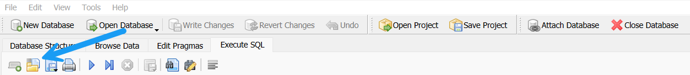
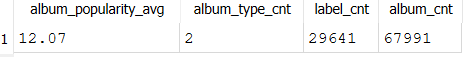

Transform and Load Data
Overview
In this lab, you will be using SQL to transform raw Spotify music data containing information about an album, artist(s), tracks, and genre(s) all in a single table into a relational database. In practice, there are ETL (Extract, Transform, and Load) tools to handle similar tasks but we will be leveraging our new SQL skills to handle the job.
Click here to download all resources needed for the lab. Here is a summary of the contents in the music_resources.zip file:
music.dbdatabase with all tables created. Thestage_music_datatable has been pre-loaded with 375,141 rows of data.- The
transform_load_music_data_student.sqlfile is where you will be writing all of your SQL code to transform and load the data into the database tables. - The
submission.yamlfile for all of the questions below.
Here is an ERD for the music database:

Acknowledgment
The original version of this data came from the Spotify Web API but the raw data used to load into the stage table came courtesy of this Kaggle dataset.
Getting Started
Open the music.db file with DB Browser and click on the Database Structure tab to see all 7 tables in the database.

Click on the Browse Data tab and then select the stage_music_data table from the drop-down and review the general structure of the table and values so you have an idea of what you will be working with.

Click on the Execute SQL tab and then click on the yellow folder icon and then navigate to the folder that you saved the resource files and open the transform_load_music_data_student.sql file.

The SQL script is organized in two sections:
Part 1: Drop and Create Tables
Do NOT make any changes in the Part 1: Drop and Create Tables section. You are likely to make mistakes as you are loading the database so you may need to recreate the tables to refresh the database. Upon completion of this lab, you should be able to run the entire SQL script file repeatedly to recreate and load the database tables.
Warning
The Drop and Create Table statements should NOT be included in the the submission.yaml file.
Part 2: Transform and Load Tables
This is where you will be writing all of your SQL for each task. Each task will also correspond to a respective question in the submission.yaml file for the autograder.
In CP2_CRUD_Operations and HW3_CRUD_Operations, you created new data by writing simple INSERT INTO statements 1 row at a time. In this lab, you will be loading the tables with INSERT INTO statements but instead of VALUES(), you will be using a SELECT statement. Here is a generic example:
INSERT INTO table (column1, column2)
SELECT
source_data1 as column1,
source_data2 as column2
FROM source_table;
Task 1
Write a SELECT statement to INSERT INTO artist table from the stage_music_data table. Due to duplicates in the stage data for each track over time, we will use the MAX value for artist_popularity and followers for each artist. If you review the stage_music_data table, you will see there are artist_n columns for each of the artists on the track, an artist_id column as well as a name column. We only have the artist_id for the primary artist on the track so you will use the artist_id and name columns for this task.
After completing the INSERT INTO statement, run the following to validate the stats in the table:
SELECT
ROUND(AVG(artist_popularity),2) AS artist_popularity_avg,
ROUND(AVG(followers),2) AS followers_avg,
COUNT(*) AS artist_cnt
FROM artist;
Here is the output:
Run the following to check the column values for the top 10 artists based on followers:
SELECT
artist_id,
artist_name,
artist_popularity,
followers
FROM artist
ORDER BY
followers DESC
LIMIT 10;
Here is the output:
Question 1
Copy and paste the code for the INSERT INTO statement above the SELECT statement into the submission.yaml file for Question 1.
Warning
Be sure to have ; in between all SQL statements in the submission.yaml file.
Question 2
The SELECT statement to check the column values for the top 10 artists based on followers is provided in the submission.yaml file for Question 2.
Task 2: Part a
Write multiple SELECT statements to INSERT INTO genre table from the stage_music_data table. Think about how you might approach combining the data into rows from 5 separate genre_n columns.
IMPORTANT
The genre table leverages the SQLite built in rowid for the genre_id column. The first INSERT INTO statement has been included so you can see the example format for this task.
The genre table does not have a direct validation in the submission.yaml file. The genre counts will be validated in Task
Task 2: Part b
Write multiple SELECT statements to INSERT INTO artist_genres table from the stage_music_data table.
Tips
This is the first instance a JOIN will be needed since you will need genre_id from part a for each of the genre fields. Think about how you can join to genre to get the newly generated genre_id artificial key.
After completing the INSERT INTO statements, run the following to validate the counts in the tables:
SELECT
g.genre,
COUNT(DISTINCT artist_id) AS artist_cnt,
(SELECT COUNT(genre_id) FROM genre) AS genre_cnt
FROM artist_genres ag
INNER JOIN genre g ON ag.genre_id = g.genre_id
GROUP BY
g.genre
ORDER BY
COUNT(DISTINCT artist_id) DESC
LIMIT 10;
Here is the output:

Question 3
Copy and paste the code for ALL of the INSERT INTO statements from Part a and b above the SELECT statement into the submission.yaml file for Question 3.
Task 3
Write a SELECT statement to INSERT INTO album table from the stage_music_data table.
Tips
This is a simple SELECT statement for the album specific fields. Do NOT do any conversions on the release_date in the stage_music_data table.
After completing the INSERT INTO statement, run the following to validate the stats in the table:
SELECT
ROUND(AVG(album_popularity),2) AS album_popularity_avg,
COUNT(DISTINCT album_type) AS album_type_cnt,
COUNT(DISTINCT label) AS label_cnt,
COUNT(*) AS album_cnt
FROM album;
Here is the output:

Run the following to check the column values for the top 10 artists based on followers:
SELECT
album_id,
album_name,
album_type,
label,
album_popularity,
release_date
FROM album
ORDER BY
album_popularity DESC,
release_date
LIMIT 10;
Here is the output:
Question 4
Copy and paste the code for the INSERT INTO statement above the SELECT statement into the submission.yaml file for Question 4.
Question 5
The SELECT statement to check the column values for the top 10 albums based on album_popularity is provided in the submission.yaml file for Question 5.
Task 4
Write a SELECT statement to INSERT INTO track table from the stage_music_data table.
Tips
This is also simple SELECT statement for the track specific fields but be careful with differences in column names in the stage_music_data table.
After completing the INSERT INTO statement, run the following to validate the stats in the table:
SELECT
COUNT(DISTINCT primary_artist_id) AS artist_cnt,
COUNT(DISTINCT album_id) AS album_cnt,
ROUND(AVG(track_popularity),2) AS track_popularity_avg,
ROUND(AVG(acousticness),2) AS acousticness_avg,
ROUND(AVG(danceability),2) AS danceability_avg,
ROUND(AVG(energy),2) AS energy_avg,
ROUND(AVG(instrumentalness),2) AS instrumentalness_avg,
ROUND(AVG(song_key),2) AS song_key_avg,
ROUND(AVG(liveness),2) AS liveness_avg,
ROUND(AVG(loudness),2) AS loudness_avg,
ROUND(AVG(mode),2) AS mode_avg,
ROUND(AVG(speechiness),2) AS speechiness_avg,
ROUND(AVG(tempo),2) AS tempo_avg,
ROUND(AVG(valence),2) AS valence_avg,
COUNT(*) AS track_cnt
FROM track;
Here is the output:
Run the following to check the column values for the top 10 tracks based on track_popularity:
SELECT
track_id,
primary_artist_id,
album_id,
track_number,
track_name,
track_popularity,
duration_ms,
time_signature,
acousticness,
danceability,
energy,
instrumentalness,
song_key,
liveness,
loudness,
mode,
speechiness,
tempo,
valence,
explicit
FROM track
ORDER BY
track_popularity DESC,
track_id
LIMIT 10
Here is a sample output:
Note
Not all columns are displayed in the sample output.
Question 6
Copy and paste the code for the INSERT INTO statement above the SELECT statement into the submission.yaml file for Question 6.
Question 7
The SELECT statement to check the column values for the top 10 tracks based on track_popularity is provided in the submission.yaml file for Question 7.
Task 5
Write multiple SELECT statements to INSERT INTO track_artists table from the stage_music_data table. This task will be similar to how you approached loading the data for artist_genres.
Tips
order_number can be hard coded 1,2,3,4,5 for each artist_n (0,1,2,3,4) column. See comment above for the CREATE TABLE statement for track_artists regarding artist_name vs. artist_id.
After completing the INSERT INTO statements, run the following to validate the stats in the table:
SELECT
COUNT(DISTINCT order_number) AS order_number_cnt,
COUNT(DISTINCT artist_name) AS artist_cnt,
COUNT(*) AS track_artist_cnt
FROM track_artists;
Here is the output:
Run the following to check the column values for a sample track:
SELECT
*
FROM track_artists
WHERE track_id = '7CyPwkp0oE8Ro9Dd5CUDjW'
ORDER BY
order_number;
Here is a sample output:
Question 8
Copy and paste the code for the INSERT INTO statements above the SELECT statement into the submission.yaml file for Question 8.
Question 9
The SELECT statement to check the column values for the sample track is provided in the submission.yaml file for Question 9.
Part 3: Validate Data
We have been validating the data as we moved along but below is a summary of each table and the expected number of rows.
| Table | Description | Rows |
|---|---|---|
album |
Album specific information such as name, label, popularity, and release date. | 67,991 |
artist |
Artist specific information such as name, popularity, and number of followers. | 31,699 |
artist_genres |
All genres that an artist is associated with if any. | 18,455 |
genre |
Genre names for all artists. | 3,835 |
track |
Track information including name, popularity, duration, and all Spotify metrics. | 375,141 |
track_artists |
All artists that are associated with a track. | 520,428 |
Part 4: Lab Submission
Submit the completed submission.yaml file on Canvas/Gradescope for CP5_Transform_Load_Data.
Conclusion
In this demo, we used DB Browser for SQLite to write multiple SQL queries to transform raw Spotify music data into a relational database.